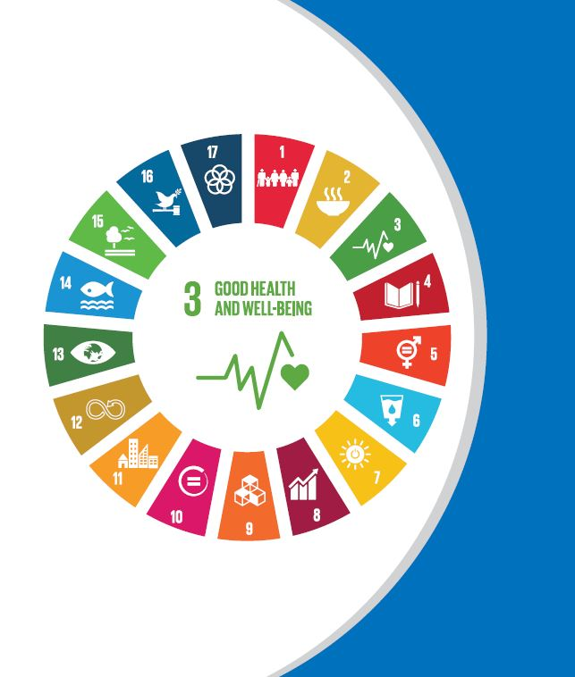

|  |
Monitoring Health in the Sustainable Development Goals |
| BANGLADESH | |
| BHUTAN | |
| DEMOCRATIC PEOPLE'S REPUBLIC OF KOREA | |
| INDIA | |
| INDONESIA | |
| MALDIVES | |
| MYANMAR | |
| NEPAL | |
| SRI LANKA | |
| THAILAND | |
| TIMOR-LESTE | |
These country health SDG dashboards provide an overview of the current status towards achieving the 13 targets under the Sustainable Development Goal #3 (SDG3): Ensure healthy lives and promotes well-being for all at all ages. All 26 SDG3 indicators plus other selected health-related indicators are presented where data is available. |